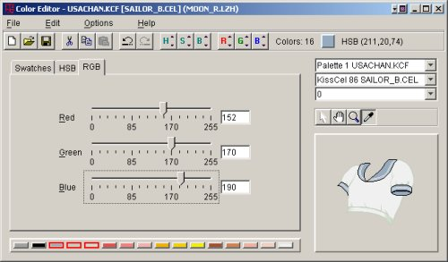

Welcome to the UltraKiss Color Editor documentation. To open an online book, choose a book from the Contents page in the upper left of the Help Viewer. Click the book icon to expand the book topics. Then, click a topic to view it.
The Color Editor is a full featured palette editing program designed to manipulate KiSS data palettes or graphical image file palettes for images used in KiSS data sets. This online Help document provides reference material for the various commands and options available within the Color Editor program.
The Color Editor main program screen is shown in Figure 1. The Color Editor program uses standard menu commands to load files, set program options, select integrated tools, and display online help. We assume that the reader is familiar with the use and operation of basic computer graphical user interfaces.
The Color Editor is used to adjust individual palette colors. The Color Editor loads and saves image palette files.
Figure 1.
The color editor screen is divided into four sections. The upper left section contains a color chooser panel to choose a color from a predefined set of color swatches. Colors may also be selected by hue, saturation, or brightness, or by individually setting the red, green and blue color components. The selected color becomes the current active color. The active color is shown on the menu bar and highlighted in the palette panel.
The lower left section of the screen is the palette panel. The palette panel displays color buttons for all colors defined in the palette. Palettes can contain up to 256 colors. All palette colors selected for editing are highlighted with red selection boxes around the color buttons. More than one color can be selected at one time. All selected colors are referred to as the selection set. New colors can be added to the selection set by clicking on a button when the Ctrl key is down. Colors can be removed from the selection set by right clicking on a selected color. Consecutive colors can be selected by clicking on a button while holding the Shift key down.
Only one color is the active color. The active color is normally the first color chosen when a selection set is created. If a selection set exists the active color can be changed by holding the Ctrl key down while clicking on a selected color. The active color is important. It is used when relative color difference changes are made to a set of selected colors. For example, to change the hue or tint of all palette colors in shades of blue, the various shades of blue must be selected within the palette. One of these colors will be the primary active color. When the color chooser is used to adjust the active color then all selected palette blue colors will be changed using the relative color difference between the new color and the current active color.
The upper right section of the color editor screen is the palette and image selection panel. The palette drop down selection box list all possible palette files within the currently accessed archive file or directory. The image drop down selection box lists all images that can use this palette. Palette files may be KiSS KCF palette files or GIF or BMP images that contain internal palettes. If a KiSS palette file is being edited the image drop down box will list all KiSS cel type images for this palette. If an internal GIF or BMP palette is being edited the image drop down box will list only the specific GIF or BMP image that defines this palette.
The palette group selection box is used to choose a specific group within the palette file. KiSS KCF files can contain multiple palettes. GIF and BMP images contain only one palette. If a new palette group is selected the palette panel and preview image will be adjusted to show the new palette colors.
The lower right section of the color editor screen is the image preview panel. The preview panel can be used to select a particular color from the preview image. Selection tools are provided to select a region of interest, magnify the image, pick up a color, or move the preview image in the panel. The eyedropper tool is used to select an image color. Any color selected with the eyedropper is highlighted in the palette panel and becomes the new active color.
Color is measured in one of two different systems. The HSB system assigns a hue, saturation, and brightness measure to every color. The RGB system assigns a red, green, and blue color component to every color. These systems are sufficient to represent most colors that can be reasonably displayed on a computer.
The Color Chooser is a tabbed panel that enables individual selection of almost any color. The first pane is the swatch pane and allows color selection from a predefined set of color swatches. A color swatch can be chosen by clicking on the appropriate color and the selected color will be applied to any existing palette selection set. The preview image will be adjusted to use the new color. This color is saved in the recently used table for reuse.
Figure 2 shows how colors can be chosen based upon hue, saturation, and brightness controls. Hue is one measure of color and represents an angle around a 360 degree color circle. Hue values range from 0 to 360 degrees. Different hues are different colors.
The vertical bar shows all the colors of the rainbow and the slider control beside the bar can be used to adjust hue values. If the slider is moved the hue component of the color will change without adjusting the color saturation or brightness components. Conversely, if the small white circle in the color chooser panel is moved variations in color saturation and brightness will occur without changing the hue.
The hue control is very useful for adjusting image colors. The shade of blue in the sailor top preview image in Figure 2 has been adjusted from the original color as seen in Figure 1.
Figure 2.
Figure 3 shows how the color chooser can be used to change color saturation. Saturation measures how much color is applied, or the strength of the color. Saturation is specified as a percentage from 0 to 100. If the saturation is low the color will appear weak, or light. If saturation is high the color will appear strong, or dark.
If the small white circle is moved within the saturation color pane the hue and brightness of the color can be changed without adjusting the saturation component..
Figure 3.
Figure 4 shows how color brightness can be adjusted. Brightness is the third attribute of color in the HSB system. Brightness is specified as a percentage from 0 to 100. Colors with low brightness are dark. Colors with a high brightness are light.
If the small white circle is moved within the brightness color pane the hue and saturation of the color can be changed without adjusting the brightness component.
Figure 4.
The last color chooser tab can be used to set color RGB values. Individual color values can be entered into the text boxes or control sliders can be dragged to adjust the color component as seen in Figure 5.

Figure 5.
The palette panel identifies all colors in the palette file. Not all images have palettes and if a non-palette image or truecolor image is loaded into the Color Editor the palette panel will not be shown.
Figure 6 shows a new, default 256 color palette. This palette was created through the File - New command. The default color palette provides a set of standard grey colors, predefined colors, and a generic span of many hues in the rainbow.
New colors can be added to the selection set by clicking on a button with the Ctrl key down. Colors can be removed from the selection set by right clicking on a selected color. A series of consecutive colors can be selected by clicking on a button while holding the Shift key down.
Figure 6.
The image preview pane provides direct visual feedback on the effect of color changes on the image of interest. Four control buttons or icons can be used to manipulate the preview image. The image in the preview pane can be magnified, examined through a region of interest, or moved as required. A specific color from the image can be picked up as the active color and subsequently changed.
KiSS palette files can apply to one or more KiSS cels. If one specific KiSS cel has been selected for color editing, changes to the palette file can affect other cels in the data set. To minimize palette editing errors, if a KiSS palette file is loaded into the color editor an image viewing option to view All Cels can be used to preview all images concurrently in the preview pane. Figure 6 shows all cels previewed for a KiSS palette file. It also illustrates how a rectangular region of interest can be selected for previewing a portion of the total image.
Figure 7.
Next Document: Menu Commands
Copyright (c) 2002-2023 William Miles